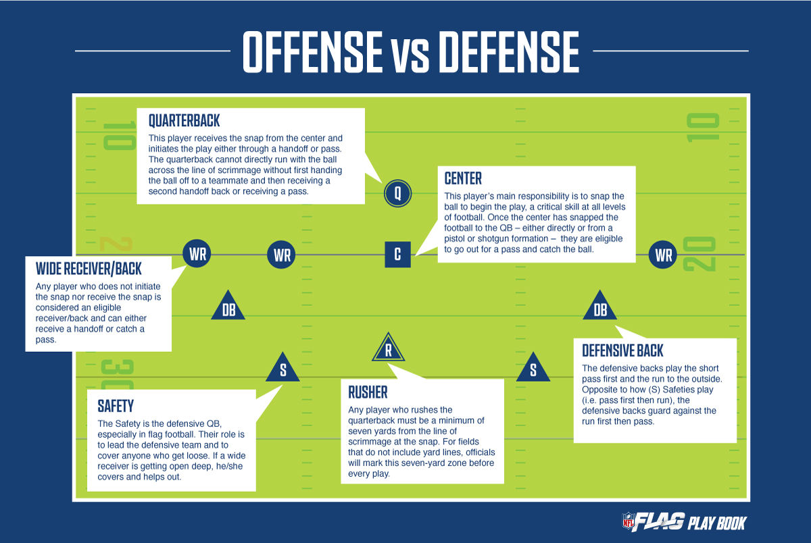
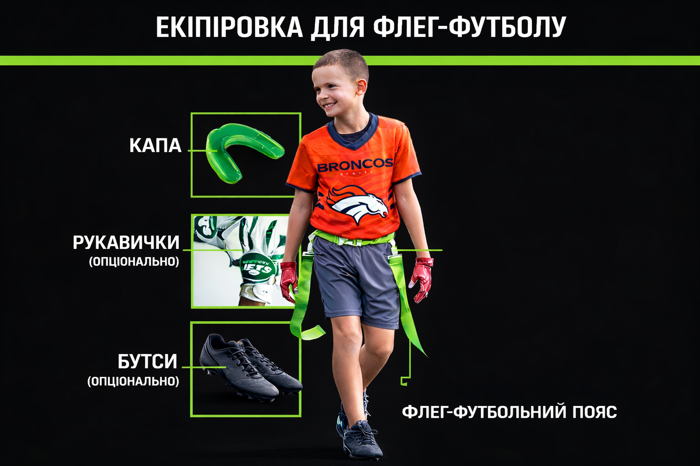

Флег-футбол — це швидка безконтактна версія американського футболу. Замість силових прийомів гравця зупиняють, зірвавши прапорець з його пояса.
Вид спорту стрімко розвивається у світі та офіційно включений до програми Олімпійських ігор (Лос-Анджелес 2028). Швидкість, безпечність і доступність роблять його одним із найдинамічніших командних видів спорту сьогодня.

5 на 5 гравців
Дві половини (турнірний формат: 2 × 20 хвилин)
Годинник зупиняється лише на перерві, тайм-аутах або травмах

Мінімальний контакт
Заборонені удари, пірнання з м'ячем і блокування суперника
Розіграш завершується після зриву прапорця
Квотербек не може перетинати лінію розіграшу з м'ячем
Лише 1 пас вперед за розіграш
Пас вперед має бути спійманий за лінією розіграшу
Необмежені передачі назад за лінією розіграшу
Атака починає зі своєї 5-ярдової лінії
4 спроби, щоб перейти центр поля
Після перетину центру — 4 спроби для занесення тачдауну
Тачдаун — 6 очок
Реалізація:
1 очко з 5 ярдів
2 очки з 10 ярдів
Сейфті (зрив прапорця з гравця у власній заліковій зоні) — 2 очки
Заборонено стрибати або пірнати, щоб уникнути зриву прапорця, проте дозволено ухилятися
Оберт (spin) дозволений
Зони без бігу: 5 ярдів перед ендзоною та біля центру поля
Кінець розіграшу визначається положенням м'яча в момент зриву прапорця
Квотербек має 7 секунд на виконання передачі
Перехоплення м'яча захистом можна повертати
1 або 2 призначені гравці можуть виконувати пресинг
Стартують за 7 ярдів від лінії розіграшу
Після передачі назад усі захисники можуть атакувати